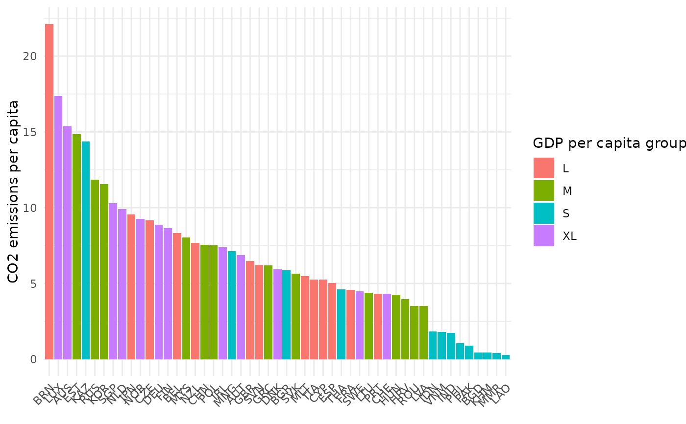

Plot bar charts of single indicators. Bar charts can be coloured by an optional grouping variable by_group, or if
iCode points to an aggregate, setting stack_children = TRUE will plot iCode coloured by its underlying scores.
Usage
plot_bar(
coin,
dset,
iCode,
...,
uLabel = "uCode",
axes_label = "iCode",
by_group = NULL,
filter_to_ends = NULL,
dset_label = FALSE,
log_scale = FALSE,
stack_children = FALSE,
bar_colours = NULL,
flip_coords = FALSE
)Arguments
- coin
A coin object.
- dset
Data set from which to extract the variable to plot. Passed to
get_data().- iCode
Code of variable or indicator to plot. Passed to
get_data().- ...
Further arguments to pass to
get_data(), e.g. for filtering units.- uLabel
How to label units: either
"uCode", or"uName".- axes_label
How to label the y axis and group legend: either
"iCode"or"iName".- by_group
Optional group variable to use to colour bars. Cannot be used if
stack_children = TRUE.- filter_to_ends
Optional way to filter the bar chart to only display the top/bottom N units. This is useful in cases where the number of units is large. Specify as e.g.
list(top = 10)orlist(bottom = 10)to return only the top or bottom ten units respectively (the value 10 can be changed of course).- dset_label
Logical: whether to include the data set in the y axis label.
- log_scale
Logical: if
TRUEuses a log scale for the y axis.- stack_children
Logical: if
TRUEandiCoderefers to an aggregate, will plotiCodewith each bar split into its underlying component values (the underlying indicators/aggregates used to createiCode). To use this, you must have aggregated your data anddsetmust point to a data set where the underlying (child) scores ofiCodeare available.- bar_colours
Optional vector of colour codes for colouring bars.
- flip_coords
Logical; if
TRUEflips to horizontal bars.
Details
This function uses ggplot2 to generate plots, so the plot can be further manipulated using ggplot2 commands.
See vignette("visualisation) for more details on plotting.
Examples
# build example coin
coin <- build_example_coin(up_to = "new_coin", quietly = TRUE)
# bar plot of CO2 by GDP per capita group
plot_bar(coin, dset = "Raw", iCode = "CO2",
by_group = "GDPpc_group", axes_label = "iName")
